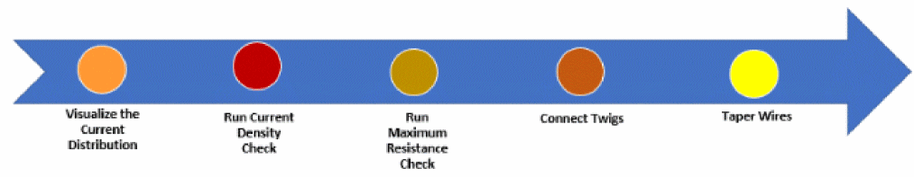

2
Performing Interactive SDR Checks
During interactive routing, you use SDR for two modes of routing checks, one based on the current density and the other on the maximum resistance. The following diagram depicts the steps for interactive SDR checks to avoid EM and maxResistance violations in the design while performing Simulation Driven Interactive Routing:

-
Visualize the Current Distribution.
Identifies the net connections that either consume or generate the most current. See Visualizing the Current Distribution Per Net. -
Run the Current Density Check.
Estimates the current in the edited wire and lets you create a design with the appropriate width of the wire based on the estimated EM value. See Running Interactive SDR Current Density Checks. -
Connect Twigs.
Connects multiple pins automatically with the appropriate wires and vias. See Connecting Twigs Automatically. -
Taper Wires.
Adjusts the width of each segment independently. See Tapering in SDR.
Related Topics
Return to top